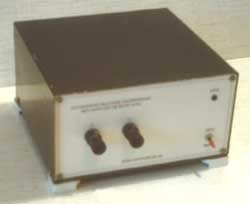
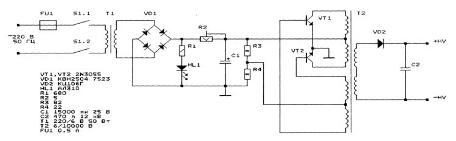

Высоковольтный преобразователь напряжения ~220/=10000 В

Высоковольтный преобразователь напряжения предназначен для проведения опытов, в которых требуется источник высокого (до 10000 вольт) напряжения при малом потребляемом токе (единицы микроампер). Отличается простотой конструкции и эксплуатации.
Технические данные:
Конструкция
Схема преобразователя приведена на рис. 1.

Рис. 1. Схема электрическая принципиальная высоковольтного преобразователя напряжения.
На транзисторах VT1, VT2 (2N3055) и трансформаторе T2 собран генератор частотой около 15 кГц. С выходной высоковольтной обмотки трансформатора T2 напряжение подается на выпрямитель VD2 (КЦ106Г) с фильтром C2. Выпрямленное высокое напряжение поступает на выходные клеммы. Для питания генератора служит трансформатор T1 с выпрямителем VD1 (KBH2504) и фильтром R2C1. Цепочка резисторов R3R4 служит для задания напряжения смещения транзисторов. Для контроля включения преобразователя в сеть служит индикатор HL1, подключенный через резистор R1 к выходу низковольтного выпрямителя. Подбором сопротивления резистора R2 добиваются максимальной выходной мощности преобразователя.
Применение
Высоковольтный преобразователь напряжения используется в лабораторных условиях при проведении различных экспериментов, а также для проверки качества изоляции. Для измерения выходного напряжения преобразователя может использоваться аналоговый киловольтметр [1].
Ссылки:
17.12.2003
19.06.2010
15.10.2010
Альтернативные источники
энергии
Компьютеры и
Интернет
Магнитные поля
Механотронные системы
Перспективные
разработки
Электроника и технология